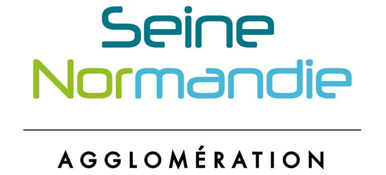

🗺️ Bienvenue dans le Géo-Quizz !
Prêt à tester vos connaissances sur le territoire de Seine Normandie Agglomération ?
Le but est simple : trouvez la bonne zone pour chacune des 10 questions en un minimum de clics et ainsi prouver que le territoire n'a aucun secret pour vous !